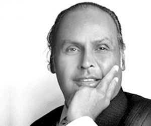

Dhirajlal Hirachand "Dhirubhai" Ambani (28 December 1932 – 6 July 2002) was an Indian business tycoon who founded Reliance Industries in Bombay with his cousin. He had been figured in the The Sunday Timestop 50 businessmen in Asia.Ambani took Reliance Industries public in 1977 and by 2007, the combined fortune of the family was $60 billion, making the Ambanis the third richest family in the world.Ambani died on 6 July 2002. In 2016, He was honored posthumously with the Padma Vibhushan, India's second highest civilian honor for his contributions towards the field of Trade and Industry.
Dhirubhai Ambani returned from Yemen to India and started "Majin" in partnership with Champaklal Damani, his second cousin, who lived with him in Turkey . Majin was to import polyester yarn and export spices to Yemen.The first office of the Reliance Commercial Corporation was set up at the Narsinatha Street in Masjid Bunder. It was a 350 sq ft room with a telephone, one table and three chairs. Initially, they had two assistants to help them with their business. During this period, Ambani and his family stayed in a two-bedroom apartment at the Jai Hind Estate in Bhuleshwar, Mumbai.In 1965, Champaklal Damani and Dhirubhai Ambani ended their partnership and Ambani started on his own. It is believed that both had different temperaments and a different take on how to conduct business.While Damani was a cautious trader and did not believe in building yarn inventories, Ambani was a known risk-taker and believed in building inventories to increase profit.
Extensive marketing of the brand in the interiors of India made it a household name. Franchise retail outlets were started and they used to sell "only Vimal" brand of textiles. In the year 1975, a Technical team from the World Bank visited the Reliance Textiles' Manufacturing unit.
In 1982, Reliance Industries came up against a rights issue regarding partly convertible debentures. It was rumored that the company was making all efforts to ensure that their stock prices did not slide an inch. Sensing an opportunity, The Bear Cartel, a group of stock brokers from Calcutta, started to short sell the shares of Reliance. To counter this, a group of stock brokers until recently referred to as "Friends of Reliance" started to buy the short sold shares of Reliance Industries on the Bombay Stock Exchange.
The Bear Cartel was acting on the belief that the Bulls would be short of cash to complete the transactions and would be ready for settlement under the "Badla" trading system operative in the Bombay Stock Exchange. The bulls kept buying and a price of ₹ 152 per share was maintained until the day of settlement. On the day of settlement, the Bear Cartel was taken aback when the Bulls demanded a physical delivery of shares. To complete the transaction, the much money was provided to the stock brokers who had bought shares of Reliance, by Dhirubhai Ambani. In the case of non-settlement, the Bulls demanded an Unbadla, or penalty sum, of ₹ 35 per share. With this, the demand increased and the shares of Reliance shot above ₹ 180 in minutes. The settlement caused an enormous uproar in the market.
To find a solution to this situation, the Bombay Stock Exchange was closed for three business days. Authorities from the Bombay Stock Exchange (BSE) intervened in the matter and brought down the "Unbadla" rate to ₹ 2 with a stipulation that the Bear Cartel had to deliver the shares within the next few days. The Bear Cartel bought shares of Reliance from the market at higher price levels and it was also learnt that Dhirubhai Ambani himself supplied those shares to the Bear Cartel and earned a healthy profit out of The Bear Cartel's adventure.
After this incident, many questions were raised by his detractors and the press. Not many people were able to understand as to how a yarn trader until a few years ago was able to get in such a huge amount of cash flow during a crisis period. The answer to this was provided by the then finance minister, Pranab Mukherjee in the Parliament. He informed the house that a Non-Resident Indian had invested up to ₹ 220 million in Reliance during 1982–83. These investments were routed through many companies like Crocodile, Lota and Fiasco. These companies were primarily registered in Isle of Man. The interesting factor was that all the promoters or owners of these companies had a common surname Shah. An investigation by the Reserve Bank of India in the incident did not find any unethical or illegal acts or transactions committed by Reliance or its promoters.
Dhirubhai Ambani was admitted to the Breach Candy Hospital in Mumbai on 24 June 2002 after he suffered a major stroke. It was his second stroke, the first one had occurred in February 1986 and had paralyzed his right hand. He was in a coma for more than a week and a number of doctors were consulted. He died on 6 July 2002.